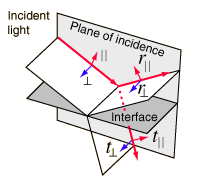
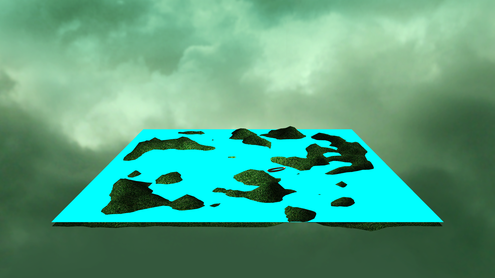
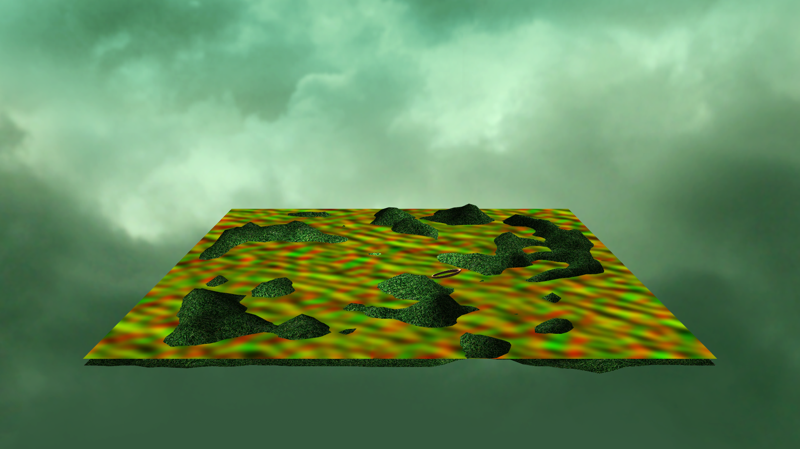
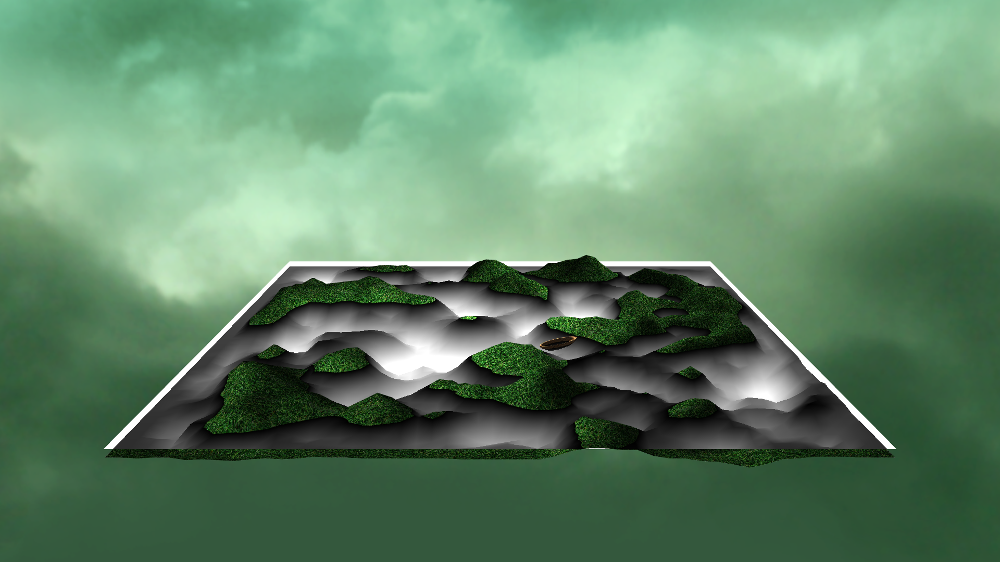

Reflective and Refractive Water Simulation Through Use of the Fresnel Equations
Kyle Thompson
Case School of Engineering
Case Western Reserve University
Cleveland, Ohio
kdt33@case.edu

How it Works
Augustin-Jean Fresnel, a French physicist and civil engineer, derived the Fresnel equations in the early 1800s. They are often used in physics to observe the behavior of electromagnetic waves as they pass through reflective and refractive surfaces with given refractive indices, as shown in the image below:
The plane of incidence is relevant when performing calculations with electromagnetic waves, as the magnetic portion runs perpendicular to the light, however for this application's purposes, only the vector is necessary.
The Fresnel equations can be used to ultimately determine how much of the reflective component and how much of the refractive component are visible when viewing a reflective surface in computer graphics. This can be represented in a value between 0 and 1, which is calculated by taking the dot product of the view vector and the normal of the reflective surface.
Controlling the UI
The user interface shown in the videos that allows the user to dynamically add trees and rocks to the scene can be navigated with the following controls, which are also outlined in the project's README:
- Move the mouse: Adjust the X and Y rotation of the Camera
- 1: Spawn a tree of random scale and Y rotation at (0,0,0)
- 2: Spawn a rock of random scale and Y rotation at (0,0,0)
- Up: Raise the water level
- Down: Lower the water level
With no object selected:
- W: Move the camera forward
- S: Move the camera backwards
- A: Move the camera to the left
- D: Move the camera to the right
With an object selected:
- W: Move the object forward along the X and Z components of the camera's forward vector
- S: Move the object backwards along the X and Z components of the camera's forward vector
- A: Move the object backwards along the X and Z components of the camera's right vector
- D: Move the object forward along the X and Z components of the camera's right vector
- Q: Decrease the Y value of the object
- E: Increase the Y value of the object
- Enter: Finalize the position of the object and deselct it
Tools & Resources
This project was written in C# and GLSL using OpenTK v2.0.0, an open source wrapper for OpenGL and OpenAL.
The distortion map, normal map, and height map for the terrain were all taken from a video tutorial series on YouTube by ThinMatrix.
The tree, rock, and boat models were all modeled, unwrapped, and had textures painted for them using Blender and Adobe Photoshop, respectively.
The Water Rendering Process
Step One
First, a quad is rendered across the full length of the area where the water is meant to be rendered. For this example, the quad is colored cyan, but only to show the positioning of the quad.
Step Two

Next, two separate FBOs are rendered to, the first of which using the camera's current view matrix. This FBO is passed to the water shader. Here it is mapped to the quad, with a white tint of 10% added so that it's obvious where the borders of the quad are, as otherwise the image would look entirely transparent.
Step Three

The reflection FBO is rendered to using a different view matrix, calculated by taking the difference between the Y position of the camera and the Y position of the water and setting the new view matrix's Y position to the water's Y position minus that distance, then negating the X rotation of the camera so the view matrix is looking up at the same angle the camera is looking down.
Step Four
The quad is passed another texture to sample, a distortion map, which uses the red and green components of the image to detail amount in the x and y directions that the UV coordinates at that point should be offset. The distortion map is used to adjust both the reflective and refractive image that is displayed.
Step Five

Sampling the distortion map to determine the appropriate UV coordinates to use for sampling the reflection and refraction FBOs, the two FBOs are mixed according to the Fresnel Effect, which is approximated by using the dot product of the view vector and the water's surface normal to represent what percentage of the image should be the refractive portion.
Step Six

Next, a normal map is passed to the quad to create a more accurate representation of the water with the Fresnel Effect because comparing the view vector to (0,1,0) simply creates a gradient, which is unrealistic. The normal map also lines up with the distortion map to accentuate the shapes of waves created by the distortion map when performing lighting calculations.
Step Seven

The new normal map can be used to add specular lighting to the water's surface to add a more realistic appearance. In this example, a single white point light is placed at (0, 10, 0). Also, a blue tint is added to the water, again to make the water appear more realistic.
Step Eight
Using information about the depth of the given fragment and using a the depth component of the refraction FBO, it can be determined how deep the water is at any given point. This can be shown in the image on the left, which uses a gradient system to show the relative depth of the water at any given point.
Step Nine

Finally, the depth of the water is used to determine the alpha channel of the final texture on the quad. Areas right on the coast become increasingly more transparent so that edges are more seamless.
The Final Product
Below you can see a couple of videos showing the project running. This project was able to run without any serious frame dropping or delay at 1920x1080 60fps, however it was necessary to scale down the resolution and the framerate to record video while also running the game, so as the simulation may appear very low resolution, bear in mind that when running without video capture software, the simulation is able to process much more quickly.
The first video showcases multiple aspects of the simulation, including the cube mapped skybox, the height map generated terrain, and of course, the water. In addition, objects can be dynamically added and placed within the scene:
The second video shows a scene with many trees already added, and attempts to find the breaking point at which the simulation begins to lose framerate. Again, with no other video capture software running, this would be no problem, although the video shows a bit less of a stable framerate: